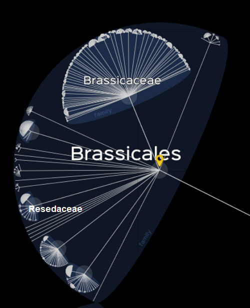
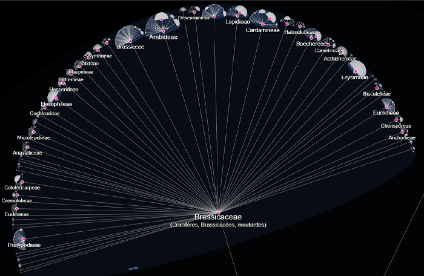
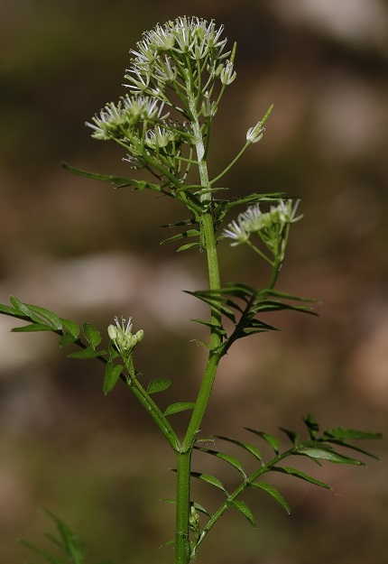

Familles de l'ordre des Brassicales
présentes dans l'Yonne et ailleurs

© Lifemap
Brassicaceae, Burnett, 1835
Classiquement : Cruciferae, Juss., 1789
Ses sous-familles ayant été défaites, cette famille "recomposée" est désormais divisée en de nombreuses tribus, parmi lesquelles se trouvent, ci-dessous, les tribus suivantes :
Elle est toujours une famille de plantes sans stipules ayant la particularité d'avoir :
- - des fleurs présentant presque toujours 4 sépales, 4 pétales, 6 étamines (dont 4 plus grandes que les 2 autres) et 2 carpelles soudés ;
- - des nectaires, présentant un nombre variable (1 à 8) de glandes nectarifères, dont 40 types différents ont été identifiés ;
- - des fruits qui sont des siliques présentant des caractériques différentes selon les espèces, au niveau de leurs sections qui peuvent être plates, quadrangulaires ou rondes, ou en devenant lomentacées ;
- - des métabolites secondaires nommés glucosinolates (dont la conversion enzymatique grâce à la myrosinase donne des isothiocyanates) leur permettant de se défendre contre leurs ravageurs.

© Lifemap
Tribu des Arabideae ---
- Alyssum alyssoides
- Alyssum montanum
- Arabis alpina
- Arabis caucasica
- Arabis hirsuta
- Arabis planisiliqua
- Arabis sagittata
- Aubrieta deltoidea
- Aurinia saxatilis
- Berteroa incana
- Draba muralis (pas vue depuis 2010)
- Draba verna
Tribu des Anastaticeae ---
- Lobularia maritima
Tribu des Biscutelleae ---
- Biscutella laevigata
- Lunaria annua
- Lunaria rediviva
Tribu des Brassiceae ---
- Brassica x juncea, hybride d'espèce synonyme de x Brassarda juncea, hybride de genre
et une parenthèse sur sa biologie et ses feuilles comestibles qui l'ont fait voyager. - Brassica napus
- Brassica napus var. napus (cultivé, pouvant s'échapper des cultures)
- Brassica nigra
- Brassica oleracea
- Brassica rapa
- Brassica rapa var. oleifera
- Diplotaxis muralis
- Diplotaxis tenuifolia
- Diplotaxis viminea
- Erucastrum supinum
- Mutarda arvensis (ex Sinapis arvensis)
- Raphanus raphanistrum
- Raphanus sativus
- Sinapis alba
Tribu des Buniadeae ---
Tribu des Calepineae ---
Tribu des Camelineae ---
- Arabidopsis arenosa subsp. arenosa
- Arabidopsis arenosa subsp. borbasii
- Arabidopsis thaliana
- Camelina microcarpa
- Camelina sativa
- Capsella bursa-pastoris subsp. bursa-pastoris
- Capsella rubella
- Neslia paniculata
- Neslia paniculata subsp. thracica
Tribu des Cardamineae ---
- Armoracia rusticana
- Barbarea intermedia
- Barbarea stricta
- Barbarea verna
- Barbarea vulgaris

C. impatiens, Saint-Moré, 11 mai 2018 - Photo © Daniel Bourget
- Cardamine amara
- Cardamine dentata
- Cardamine flexuosa
- Cardamine heptaphylla
- Cardamine hirsuta
- Cardamine impatiens
- Cardamine pratensis
- Nasturtium officinale
- Rorippa amphibia
- Rorippa austriaca
- Rorippa palustris
- Rorippa pyrenaica
- Rorippa sylvestris
- Rorippa x anceps
Tribu des Coluteocarpeae ---
- Microthlaspi perfoliatum
- Noccaea caerulescens subsp. caerulescens
- Noccaea montana
Tribu des Conringieae ---
- Conringia orientalis
Tribu des Descurainieae ---
- Descurainia sophia
- Hornungia petraea
Tribu des Erysimeae ---
- Erysimum cheiranthoides
- Erysimum cheiri
- Erysimum odoratum
Tribu des Hesperideae ---
Tribu des Iberideae ---
- Iberis amara
- Iberis intermedia subsp. intermedia
- Iberis intermedia var. durandii
- Iberis sempervirens
- Teesdalia nudicaulis
{kind=link}
{kind=link}
Tribu des Isatideae ---
- Isatis tinctoria
- Myagrum perfoliatum
Tribu des Lepidieae ---
- Lepidium campestre
- Lepidium draba
- Lepidium graminifolium
- Lepidium latifolium
- Lepidium perfoliatum
- Lepidium ruderale
- Lepidium sativum (*)
- Lepidium squamatum
- Lepidium virginicum
Tribu des Sisymbrieae ---
- Sisymbrium austriacum
- Sisymbrium irio
- Sisymbrium loeselii
- Sisymbrium officinale
Tribu des Thlaspideae ---
- Alliaria petiolata
- Mummenhoffia alliacea (L.) Esmailbegi & Al-Shehbaz, 2018 (ex Thlaspi alliaceum)
- Thlaspi arvense
{kind=link}
Tribu des Turritideae ---
{kind=link}
Resedaceae, Martinov, 1820
- Reseda alba
- Reseda lutea subsp. lutea
- Reseda luteola
- Reseda phyteuma
Autres familles botaniques
par ordre alphabétique ►